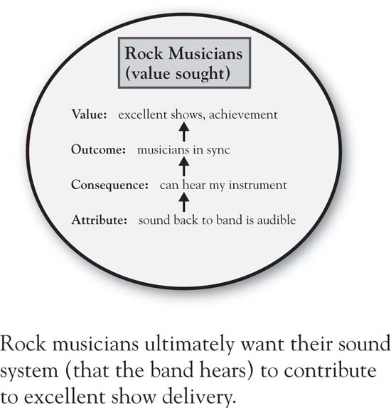
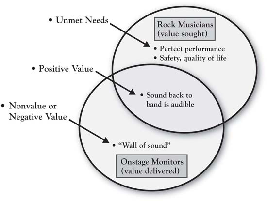
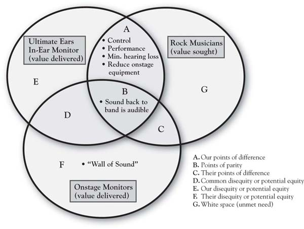

Sara Johnson owns a pet store. She started this small business out of a passion for helping people take care of their pets. The store is off to a good start, but she really worries about how she will grow the business. The competitive environment that surrounds her store is challenging, with the big-box stores having full-blown pet departments, specialty stores improving, and Web-based operations providing access to low-priced supplies. In addition, customer needs seem to change over time.
In contrast, Ken Smith is a brand manager for a $900 million division of a major consumer products company. Ken worries about the exact same things as Sara, just on a different scope and scale. He has customers who have supported 8% growth of his product lines in each of the last 2 years. His challenge, though, is how to maintain that growth rate (representing $72 million in sales) in markets where competitive imitation over time has led the products to become very similar and competitive advantage more difficult to come by.
The context and magnitude of these problems are quite different, but, at the root, they are the same. Whether you are Sara or Ken, the general manager of an insurance company seeking to increase policies sold, a United Way director seeking to increase donations, or a human resource director wishing to increase business with internal staff in their hiring decisions, your question is, how do we successfully position against the competition and grow our business? While a complex matter, the task of building growth strategy has some simple foundational ideas. The goal of this book is to teach these fundamental concepts to you so that you can implement them and then teach others.
The teaching requires breaking down what seems like a complex task into simpler component parts. While you will have no trouble understanding the component parts—such as customer value, competitive position differences, and firm capabilities—what most firms struggle with is how you integrate them in building effective growth strategy. In this chapter, we will consider the fundamentals of competitive strategy at the heart of the framework we use and the reasons why integrating these principles is difficult and rare. Yet we will also point out that businesses that practice such integration make more money. At the core of all this is the notion that you cannot grow your company (or your school, your nonprofit, your relationships, the happiness of your volunteers, for that matter) without really understanding the value your “customers” seek and the value that you can create for them.
Having lost a teenage brother to an auto accident in his youth, CEO Peter Lewis of Progressive Insurance was driven by a deep understanding of human needs surrounding auto insurance. Further fueled by his distaste for abysmal turnaround times on claims in the industry, Lewis decided—in the face of much resistance within his company—that Progressive would become a company with the capability of providing an immediate-response claims service. Progressive’s well-known growth from small niche competitor to one of the “Big 4” auto insurance firms owes everything to Peter Lewis’s intuitive, tenacious application of three basic principles of positioning strategy.Katz (2008, July 8). Also, Salter (1998, October 3) notes that proposition 103 highly regulated the insurance industry and cost Progressive $60 million in refunds.
The first principle is defining advantage from the perspective of customer value.Jaworski and Kohli (1990, December 7); MacMillan and Selden (2006); Sheth et al. (2000); Kim and Mauborgne (1997, January–February). Lewis saw dissatisfaction with response times where others in the industry did not. Further, he understood why it was important. Delay in claims processing causes inconvenience and adds stress to already stressful situations for drivers having had an accident who seek fast resolution and peace of mind. The second principle is developing insight about opportunity in a way that differentiates from the competition.Porter (1980, 1985). So while many firms in the industry would define their business purpose as “paying auto accident claims,” Lewis instead described Progressive’s as “reducing the human trauma and economic costs of automobile accidents.” Other competitors either did not recognize the opportunity or simply accepted poor claims-adjustment service and response time because all firms were following the same antiquated model.
Just developing a positioning strategy is not enough, however. The third principle centers around developing distinctive capabilities, resources, and assets to execute the positioning strategy.Wernerfelt (1984); Barney (1991); Porter (1996). Progressive built skill in technology development, process design, and human resources. Over a period of years, the company developed proprietary software and databases, specific selection and development skills for hiring and training employees, as well as a disciplined measurement culture to manage continuous improvement.
In sum, in his search for growth, Peter Lewis intuitively and persistently followed these three fundamental principles:
While almost simple enough to be intuitively obvious, it is easy to lose sight of these principles. In fact, there are a variety of forces that get in the way of their effective implementation.
It turns out that it is difficult for an individual—let alone a complex organization—to simultaneously hold the three principles of strategy in mind. Multiple goals imply multiple, often costly, efforts to achieve them. Potential conflict between, and trade-offs among, the three goals of beating the competitor, creating value for customers, and leveraging our capabilities make it natural for firms to treat them separately. Illustrative of this is a study of strategic focus in decision making, conducted by George Day and Prakash Nedungadi of the Wharton School, which found that 77% of the organizations studied had a “single-minded” focus;Day and Nedungadi (1994, April). that is, the organizations largely focused on either customers, competitors, or the internal workings of the company but rarely any of the three together. Three distinct types of firms were identified in the study: self-centered firmsFirms that focus on internal factors. (i.e., focused on internal factors; 33%), customer-centered firmsFirms that focus on their customers. (31%), and competitor-centered firmsFirms whose moves center on competitors’ moves and actions. (13%).
These single-minded views are suboptimal, however. Day and Nedungadi found that 16% of the firms they studied were market drivenFocus is jointly on competitors and customers., that is, focused jointly on competitors and customers, and that these firms reported significantly superior financial performance relative to the other firms in the study. Similarly, other research has found that a more integrated view of company, customers, and competitors leads to greater profitability.Slater and Narver (2000); Narver and Slater (1990); Kirca et al. (2005). Yet the striking point is that firms that do an effective job of integrating are in the minority. The more common tendency to be single-minded limits the search for growth opportunities and may be self-perpetuating.Hambrick (1982); Cohen and Levinthal (1990); Oxenfeldt and Moore (1978).
Most decisions that involve customers are made without customer research. Firms have neither the time nor the resources to devote to every customer-related decision. Interestingly, though, even when sophisticated, large-sample research is conducted for particular decisions, it may frequently fall by the wayside because the research is shouted down by managers with prior agendas that contradict research findings.
Although they may at times dismiss formal research, we know that smart managers talk to customers and know them, often over many years. So it is fair to say more informal research is the norm. In this sense, it is difficult for managers to believe that they “don’t know” customers. Yet there is much research that suggests the opposite. To understand why, consider a particularly telling study from University of Chicago researchers Harry Davis, Steve Hoch, and Easton Ragsdale. Davis and his colleagues asked pairs of experimental subjects to estimate each other’s preferences for new product concepts. The new product concepts were a mix of higher-priced durable goods, lower-priced durables and nondurables, and services. For each concept, each subject was asked to estimate both the probability that they would purchase the concept in the future and the probability that the person they were paired with would purchase the concept. Across four studies, which varied the amount of information provided for the concepts (verbal description only vs. verbal description and pictorial representation) and the dependent measure used, the authors found the same results. Despite showing confidence in their estimates, the subjects showed substantial error in predicting their partners’ preferences. Only about half of them predicted more accurately than a naïve forecast that used the average of the gender-specific preferences. The authors found a strong tendency for a person to use their own preferences for the new concept to predict the preferences of their partner.
The most remarkable thing about this research, however, is that the subject pairs were not strangers. Across all the studies, husbands were paired with wives.Davis et al. (1986). In spite of intimate familiarity with each other, spouses demonstrated significant error in projecting each other’s preferences, with error coming largely from two sources. First, the husband (or wife) tried to project their own preferences onto the other, when in fact their preference was not similar to their spouse’s. Second, when the husband-wife preferences were similar, error was introduced when the spouse overadjusted for what he or she thought would be a difference in his or her mate’s preference relative to their own.
This leads us to a key question: If people who live together and know each other intimately make such errors in predicting each other’s preferences, how can product and marketing managers NOT be subject to the similar errors in predicting customers’ values? There is a fair amount of academic research that finds significant error in managerial judgment of consumer attitudes, beliefs, and behavior.See Hoch (1988); Urbany et al. (1991); Parasuraman et al. (1985); Moorman (1998). Further evidence of this comes from surveys of our own executive students and clients. They predict customer beliefs with good confidence yet express significant surprise (and opportunity!) when they subsequently conduct primary research with customers.In the past year, 155 executive MBA students who have participated in 3-Circle projects have been surveyed about the insights they obtained from customer research required as part of the project. Sixty-three percent found insights from customers to be “very surprising,” while over three-fourths (76%) reported the research “suggested customer needs they hadn’t thought of before.” Of greater interest, though, is that 88% agreed that the customer insights “led to some obvious conclusions about what we should do.”
In fact, this should not be surprising. In the day-to-day operation of a business, the immediate challenges often center on internal concerns, which tend to be very concrete, top of mind, and unavoidable. Managers spend most of their time inside, managing people and resources. The capacities within the firm need to be organized, people need to be developed, budgets need to be met. There may in fact be a biasTo exhibit or characterize by bias or prejudgement. against spending time to understand the customer’s perspective on our products and services because hearing bad news would mean that our products, processes, people selection and development, and execution would have to be changed, which is no easy task. Instead, it is very easy to assume “we know the customer.”
While most companies ask customers how their company is doing, many do not seek comparative customer views of competitors. One firm, which we will call Food Supplier, Inc., for example, happily found—through interviews in a 3-Circle project with one customer segment (independent restaurants)—that the company was hitting on a number of important points of value for customers, many relating to delivery, warehousing, and sales support. Consistent with their expectations, this suggested that the company was providing customers a great deal of value. Yet the research also explored customer perception of competitor value. This produced the startling conclusion that the key competitor matched every point-of-value provided by Food Supplier, Inc., but it was also perceived as having far superior accuracy in deliveries and invoicing, as well as premium food quality at competitive prices. This analysis opened the executive team’s eyes to opportunities for a new process improvement program in operations and sales to enhance competitive superiority in key functional areas, as well as a new marketing program to clearly communicate the differential customer value created by these new internal programs. Since that implementation, the company has experienced increases in same-store sales and has extended these standardized processes to other areas of the company.
Most of us face the difficulty of integrating relevant competitive, company, and customer facts, as well as the challenge of truly knowing customers’ natural biases. Some may argue that these difficulties work themselves out through learning and experience. But what seems to happen is often the opposite—these biases can lead to flawed judgment about competitive advantageAn advantage over competitors allowing it to generate more sales and retain more customers than the competition.. This is because we anchor our beliefs in these early observations and we are not likely to change them. In companies we work with, we see, over and over, the following three strategic errors that result from the biases discussed earlier:
In fact, what is needed is a way of thinking and a process that helps us to simultaneously think about customers, competitors, and the company, and that puts our existing beliefs to the test. That is the primary goal of the 3-Circle model and the process we will teach you in this book. Let us illustrate the key concepts.
There is competitive advantage in thinking about your organization in a way that integrates the value customers seek, the value the competitor is believed to provide, and your own value-producing capabilities. A company called Ultimate Ears illustrates such thinking. A sound engineer who worked closely with big rock bands like Van Halen, Jerry Harvey was very close to the customer segment (rock musicians) and the need for sound management. The traditional technology for band members to hear their own performance was large, onstage monitors (speakers) tied to each instrument. Figure 1.1 "Value Sought By Customers: Rock Musicians and Onstage Sound" is our first circle—the customer’s circle, in this case representing the value sought by rock and roll musicians in the sound equipment used by the band to hear its own performance. Here is the key benefit that a band desires from that equipment: that it produces sound audible to the band members (seems pretty obvious!). But let us push that a little further. Why is this important to the musicians? It seems simple, but digging underneath, it is easy to see how the notion of being able to “listen to one’s self play” is fundamentally related to overall performance and achievement. If the sound back to the band is audible, that enhances performance quality by allowing the band to be more precisely in sync with each other. Performance quality is fundamental to the success of the show to an audience that is accustomed to hearing the music on precisely mixed studio recordings. Figure 1.2 "Value Delivered By Onstage Monitors" captures the fact that the standard technology—large onstage monitors—provides this basic quality. The circle added on the lower left represents the customer’s perception of the value provided by the onstage monitors. As in any product or service category, there are a number of dimensions of this value. For the moment, though, we will focus on a few of the most important dimensions.
Figure 1.1 Value Sought By Customers: Rock Musicians and Onstage Sound
The overlap between the circles is strategically important. It is the positive “equity” provided by the product in the mind of the customer—that is, the space where value delivered meets value sought. So the onstage monitors provide a way for the band to effectively hear the sounds of their instruments and vocals, and positive value is produced for these customers.
Figure 1.2 Value Delivered By Onstage Monitors
Figure 1.2 "Value Delivered By Onstage Monitors" also points out two other strategically important concepts, relating to the areas where the circles do not overlap. The nonoverlapping area to the left—which we label nonvalue or negative value (the latter also known as disequity). Many consumption experiences have nonvalue or negative value associated with them. It is the calories consumed while relishing a big hamburger, the headache after a celebratory night out, and, occasionally, it is an endemic part of a good or service that we are simply willing to put up with in the absence of a superior alternative. It is the exorbitant fees for the broker with whom you have developed a very close relationship and trust implicitly, the chatty hair stylist whose gossip you put up with because you love the way he or she cuts your hair, or the doctor you love who makes you wait forever in the waiting room. In the case of the rock musician, it is the “wall of sound” that occurs when onstage monitors are used to allow the band members to hear the instruments. This is the deafening sound onstage that escalates as each member player sequentially keeps turning up the volume on their own monitor so they can hear their instrument. That wall of sound not only gets in the way of effective performance, it has also contributed to significant hearing loss over time among rock band members.Peters et al. (2005). For example, Alex Van Halen reports that he has lost 30% to 60% of his hearing as a result of years of sound “gas fires” occurring during onstage Van Halen shows.Sauer (2007, June 1). Where a firm’s products or services create nonvalue, or even negative value, there is significant opportunity for growth.
Similarly, growth can be found in unmet needs. This upper right portion of Figure 1.2 "Value Delivered By Onstage Monitors" is another nonoverlapping area, critical in that it keeps attention focused on the reality that customer needs are never fully met. Musicians seek perfection in performance, possibly an ideal that cannot be achieved. Yet any edge that can be obtained to improve performance is a direct contribution to the musician’s bottom line, relating to success, enjoyment, and career achievement. A second way to think more deeply about unmet needs is to ask some obvious-sounding questions about points of negative value that our product or service is creating. Why is that important enough to consumers for them to mention it? For example, one reason that the “wall of sound” problem is important to rock musicians is because it is associated with hearing loss. Why is hearing loss important? It is so obvious that we do not really think about it, yet we should think about it to understand its enormity as a consideration in decision making. As people lose their hearing, they may lose not only the capability to make a living and take care of one’s family but also the ability to enjoy the people and world around them—that is, quality of later life is a deeper value that is touched by this. So how big is the value of an alternative that solves this problem? (Huge!) Would musicians be willing to pay handsomely for a superior solution? (Yes!)
This dilemma is where Jerry Harvey came in. Encouraged by musicians who sought something to help improve performance and to reduce hearing loss, Harvey developed the equivalent of an in-ear monitor, which each player on stage would have, isolating the sound of their specific instrument. This allowed the musicians to hear clearly, to know how they fit in with the other players, and to better control their own sound. These performance benefits were supplemented not only by substantial noise reduction (easier on the ears) but also by the greater room on stage given the removal of the larger onstage monitors. Figure 1.3 "3-Circle Illustration of Ultimate Ears’ Competitive Advantage" completes the 3-Circle picture, adding the circle on the left, which represents the value provided by Harvey’s company, Ultimate Ears. The addition of the third circle creates seven distinctive areas in the Venn diagram—each labeled by a letter and each strategically meaningful. For the moment, we will focus on a couple of the key areas for illustration. Note that the basic benefit—“sound back to band is audible”—is in the middle area, labeled “Area B” or points of parityThe customer believes each of the two competing technologies delivers on that basic belief.. The customer believes each of the two competing technologies delivers on that basic benefit. What distinguishes the Ultimate Ears product are the benefits in its Area A, that is, its points of differenceThe product delivers substantial, unique value to customers in the form of superior performance.. The product delivers substantial, unique value to customers in the form of superior performance (both due to hearing the performance better and less onstage equipment) and in substantially reducing hearing loss, a quality-of-life issue. It is difficult to identify any items that customers would call positive points of difference for the onstage monitors. In contrast, the disequities that were mentioned earlier fit into Area F, which is more broadly defined as disequities, or potential equities, for the onstage monitor technology.Areas D, E, and F in Figure 1.3 "3-Circle Illustration of Ultimate Ears’ Competitive Advantage" are all labeled “disequity/potential equity” because they represent attributes currently providing no value to customers but, in fact, may provide the potential to provide value. Ultimate Ears has been a major entrepreneurial success. This product concept, based on unique, patented technology and manufacturing capability, has become a standard in the industry. It creates significant customer benefits in both enhancing performance quality and the musicians’ quality of life by limiting hearing loss.
Figure 1.3 3-Circle Illustration of Ultimate Ears’ Competitive Advantage
The analysis based on Figure 1.1 "Value Sought By Customers: Rock Musicians and Onstage Sound" through Figure 1.3 "3-Circle Illustration of Ultimate Ears’ Competitive Advantage" illustrates that Ultimate Ears was successful because it
These are the three core principles of competitive business strategy that drive the analysis guided by the 3-Circle model.
While the 3-Circle analysis presented here provides a post-hoc account of Ultimate Ears’ success after the fact, this book is about how to use the framework to analyze a current market situation and look ahead. The goal is to anticipate market development and evolution, and to build and execute solid growth strategy. We will see, in the chapters that follow, that this simple diagram provides a powerful basis for analysis of a company’s current competitive position and substantial insight into prospective growth strategy for the company. But at its roots is the most basic of all competitive strategy notions—that in simplest terms, competitive advantage is about creating value that really matters for customers, in ways that competitors cannot.
We find that the most effective starting point for such analysis is the customer and developing a deep understanding of customers’ values. Chapter 2 "Introduction to 3-Circle Analysis" provides an overview of the underlying framework that begins with the customer perspective. There, we will introduce the basic concepts and several case examples illustrating the principles that underlie the development of effective growth strategy. We then proceed in Chapter 3 "Defining the Context" through Chapter 8 "Dynamic Aspects of Markets" to provide detail on the core model concepts. The process begins with a clear definition of context (Chapter 3 "Defining the Context"). It is followed by an in-depth study of customers in which we will deeply explore the value customers seek and how existing competitors get credit for the value they create (Chapter 4 "The Meaning of Value"). From these steps, significant insight is obtained into current competitive positions and potential growth. Chapter 5 "Sorting Value" presents the categorization of customer value that is at the heart of the 3-Circle model’s contribution and in clarifying a firm’s positioning. Chapter 6 "Growth Strategy" then explores and defines the growth strategies that naturally evolve from the seven categories of value, leading to the inevitable question addressed in Chapter 7 "Implementation: An Inside View of the Organization": Do we have the skills and resources to pursue these ideas? Answering this requires a much deeper reflection on the firm’s (and competitors’) capabilities in terms of what strengths we have to leverage, what weaknesses we need to fix, and what gaps exist around which capability building will be necessary. Chapter 8 "Dynamic Aspects of Markets" explores the dynamic aspects of markets and Chapter 9 "Summary: Growth Strategy in 10 Steps" provides a summary of the book with a review of the 10-step process behind a 3-Circle growth strategy project.
This is designed to be a team process that engages customer, company, and competitor research in an integrative way. We look forward to the journey. At the end, you will find that the core of this analysis is seeking to deeply study and uncover ways to provide value for customers that competitors have simply not understood, and perhaps ways that have always been there for the taking. Chapter 2 "Introduction to 3-Circle Analysis" next provides an overview of the full 3-Circle framework.